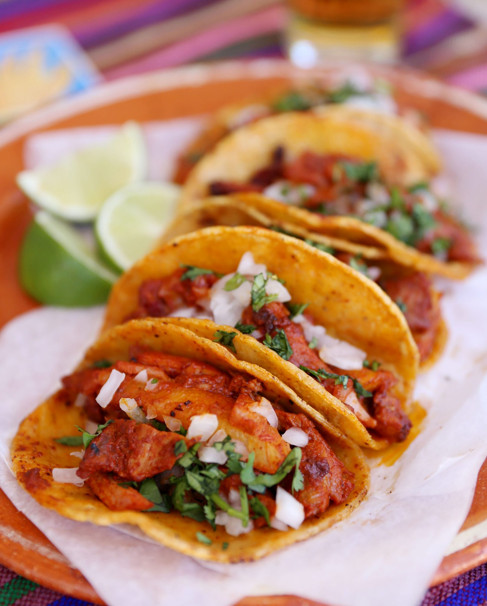

Adobada Tacos

Description
Found deep in the depths of the internet, this is a FAMILY recipe shared through the kindness of a stranger's heart. Please proceed not for profit but for a shared love of good tasting food.
Disclaimer: This is a VERY high fat food.
Ingredients
- 5 pork shoulder blade steaks (BONE IN)
- 10 dry california chiles without stem, seeds removed
- 1/8 tsp ground ginger
- 1/8 tsp ground clove
- 1/8 tsp ground black pepper
- a pinch of marjoram (Dry)
- 1/2 tsp white vinegar
- salt to taste
- 1/6th piece of mexican chocolate round (LA Abuelita)
- 1 garlic clove
- 1 piece of cinammon stick (~1 inch in size)
- 2 stems of fresh oregano (leaves only)
- lard (yup, lard)
- tortillas (small taco size preferred)
- Optional: green onion bulbs, white onion, cilantro
Steps
- Let's get started! First off, make sure you have the correct chiles. You should use California Chiles only, as any other dry chile could result in a horrible flavor. You are going to want to remove the stem from the chiles. Under running water, shake the seeds out and wash them out get ready to boil these suckers. Boil them for approximately 10-15 minutes until they start to foam a little. Now, get the Following ingredients together in a small plate: Mexican Chocolate, Garlic, ground ginger, ground clove, ground black pepper, marjoram, oregano, and cinnamon. Once the chiles are done boiling, throw them in the blender with approximately 3/4 cup of water that boiled the chile, and about 1/4 cup of regular water. Throw the rest of the ingredients into the blender. Blend for approximately 2 to 3 minutes, until well blended. Before turning off, add a splash of vinegar and salt. Add the salt and taste. If you want it saltier, add more salt, get it to your liking. Now, you are going to want to get your pork steaks ready to marinade. Once the chile is blended, put your steaks into a ziplock bag and pour chile into the bag a little at a time, getting the steaks well covered before adding the next steak. Repeat until you get all your steaks in the bag and pour remainder of the chile marinade into the bag to make sure you got every piece covered. Refrigerate overnight or 36 hours if possible
- Once your ready to make your tacos, it's time to get a cookin! Get your frying pan and add the lard enough to cover about half the meat when frying. Now fry the steaks up!. Take precautions as this is lard you are dealing with, and it will splash, burning the shit out of you. Cook about 6 or 7 minutes and flip the meat. Cook another 6 or 7 minutes. Make sure you are cooking your pork thoroughly as uncooked pork is unsafe to consume. some burning might occur at the edges, but trust me it tastes awesome. this is done. Take out of your pan and onto a cutting board. YOu are going to want to remove the bone. Now you will want to cut the meat into pieces big enough for your tacos. I can't advise on the size because some people like bigger chunks, others smaller ones. This is the time to get your green onions and fry them for about 3 minutes each, turning often. Chop up your white onion and cilantro to add to your tacos. Now get another pan nice and hot. Grab your tortillas and dip a corner of the tortilla in the lard from the meat you just cooked. throw it on the pan and rub it around to get the grease of the lard on the tortilla and get it to cook a bit. don't forget to flip a few times, as it can burn. do this for about 1 minute each tortilla, and it's done. I do 2 tortillas per taco, alot of taco sellers do this. Once you are done with your tortillas, put the chopped meat onto the tortilla, top with the cilantro and onion. your tacos are done! These are very fattening because of the tortillas, but the flavor alone will blow you away, and you are certain to never want to go to a taco truck/restaurant again.
Bonus: Sauce
Some people asked me if there is a sauce that accompanies the tacos a la "taco truck" type. Yes there is but it's not "authentic"
Salsa Ingredients
- 10-12 frest tomatillos, flaky skins removed
- 8-10 chiles de arbol (can be found at any market in the hispanic isle)
- salt to taste
Salsa Steps
- Boil the Tomatillos for approximately 20-30 minutes, on high heat. You will want to make sure the tomatillos are fully boiled and cooked. They may release a nasty gooish substance making the water gooey, so once done, discard the water. While the tomatillos are boiling, place a pan on the stove and toast the chiles until dark on both sides. CAUTION you will want to open windows, and turn your overhead fan on, because you WILL BE COUGHING from the smell! Once the chiles are toasted, remove the stems. In a blender, throw the chiles and the tomatillos in and blend. If it isn't blending well because it's too dry, add water, a little at a time, just enough to get everything thoroughly blended together. Add salt to taste.